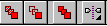
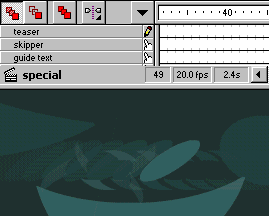
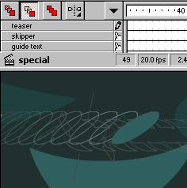
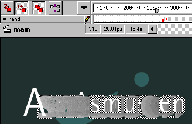

Using Onion Skins


Onion skin, is a feature in Flash, that enables you to view or select multiple frames on several layers in Flash. This is a useful feature, which often saves much time.
Note: Onion skins only appear on layers that are NOT locked. Hold ALT and click on the layer icon if you're in doubt.

These are the buttons that enable / disable the use of onion skins.
Let's start with the first button.

As you can see, the first button, enables you to see trails of the objects in an animation, in different shades of the colors you use. Each of the shaded symbols in the trail, represent that object at an earlier state in the animation. This means, the objects placement on an earlier keyframe in the timeline.

The second button, shows the shaded objects as outlines. As you can see, the symbols are still shaded, only they are now outlines. Each symbol still represents that objects placement in an earlier keyframe. Outline Onion Skins are less CPU Intensive.

The third button, allows you to select the visible symbols. This means, that you can select the first and the last keyframe of an animation, and do whatever you want with it. This allows you to make advanced operations, such as move the entire animation, instead of moving the first, then the last keyframe of the animation. On the above image, i've used a part of the intro for this site. Each letter has it's own layer. Using the outline button, and the third button, i can select both the starting and the ending keyframe for all the letters at once. This was useful, when i should scale the letters to 200% trying to obtain the effect of the letters "falling down".
Learn this tip. It will help you make more advanced animations than you'd ever dream of!